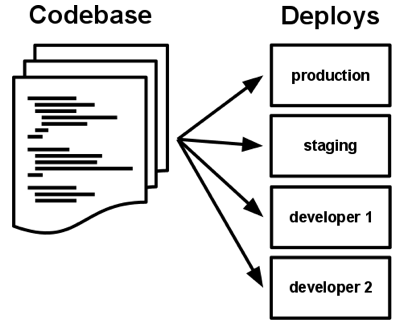
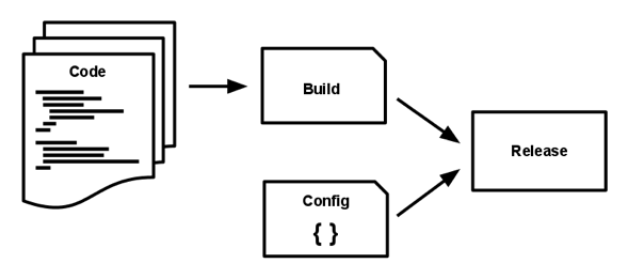

Por @gnarvaja de http://radiocut.fm
Un código base sobre el que hacer el control de versiones y múltiples despliegues

Declarar y aislar explícitamente las dependencias
Django==2.2
djangorestframework==3.10
gunicorn[gevent]
celery[redis]
mysqlclient
django-mysql
requests>=2.18.0,<3
json-logging-py
environs
django-ipware
geoip2
kombu==4.6.4
-e git+https://github.com/gnarvaja/python-redis-rate-limit#egg=python-redis-rate-limit-20191011
ipdb
ipython
rpdb
colorama
factory_boy
freezegun
coverage
responses
FROM python:3-alpine
RUN apk add --no-cache jpeg-dev zlib-dev \
&& apk add --no-cache --virtual .build-deps build-base \
linux-headers \
&& pip install --no-cache-dir --upgrade pip \
&& pip install --no-cache-dir Pillow \
Flask \
gunicorn[gevent] \
google-cloud-storage \
&& apk del .build-deps
Guardar la configuración en el entorno
from environs import Env
env = Env()
BASE_URL = env.str("BASE_URL", "https://radiocut.fm")
FREE_TRIAL_DAYS = env.int("FREE_TRIAL_DAYS", 7)
APP_ENV = env.str("APP_ENV", "production")
DEBUG = env.bool("DEBUG", APP_ENV != "production")
SECRET = env("SECRET") # => raises error if not set
COMPLEX_CONFIG = env.json("COMPLEX_CONFIG")
DATABASES = {
'default': env.dj_db("DB_DEFAULT")
}
TWITTER_AUTHS = env.ext_file("TWITTER_AUTHS", {})
DB_DEFAULT: postgres://${PGUSER:-gnarvaja}:${PGPASS}@radiocut-pg-cluster-pooler/radiocut
DICT_VARIABLE: max_error_count=100,timeout=600
SLAVE_DATABASES: default,replica,replica
Tratar a los “backing services” como recursos conectables
version: "3"
services:
django:
build:
context: .
dockerfile: Dockerfile
container_name: userservice
env_file: .env
depends_on:
- mysql
expose:
- "8000"
ports:
- 8000:8000
networks:
- composedevenv_ggnet
celery:
build:
context: .
dockerfile: Dockerfile
container_name: userservice-celery
command: ["sh", "-c", "celery worker -A ggUserService.celery -Q userService -l info --concurrency=20"]
env_file: .env
depends_on:
- mysql
networks:
- composedevenv_ggnet
mysql:
image: mariadb:10.2.12
container_name: mysql
environment:
MYSQL_DATABASE: ${MYSQL_DBNAME}
MYSQL_USER: ${MYSQL_USER}
MYSQL_PASSWORD: ${MYSQL_PASSWORD}
MYSQL_RANDOM_ROOT_PASSWORD: 1
networks:
- composedevenv_ggnet
networks:
composedevenv_ggnet:
external: true # Uses external network with Redis cluster created by k8s-cluster/compose-dev-env/
Separar completamente la etapa de construcción de la etapa de ejecución

...
ENV STATIC_ROOT /static
RUN ./manage.py collectstatic
RUN ./manage.py compilemessages
...
...
initContainers:
- name: run-db-migration
image: gcr.io/my-service:0.1.54
command: ['./manage.py migrate']
...
Ejecutar la aplicación como uno o más procesos sin estado
Publicar servicios mediante asignación de puertos
Escalar mediante el modelo de procesos
Hacer el sistema más robusto intentando conseguir inicios rápidos y finalizaciones seguras
Mantener desarrollo, preproducción y producción tan parecidos como sea posible
Mi solución: Docker en desarrollo y Kubernetes en producción
version: "3"
services:
django:
command: ["sh", "-c", "while [ 0 ]; do date; sleep 30 ; done"]
build:
args:
APP_ENV: "development"
volumes:
- ./ggUserService:/usr/local/app/
celery:
command: ["sh", "-c", "while [ 0 ]; do date; sleep 30 ; done"]
build:
args:
APP_ENV: "development"
volumes:
- ./ggUserService:/usr/local/app/
ports:
- 4445:4444
postgres:
volumes:
- /mnt/memdisk:/var/lib/postgresql/data
...
ARG APP_ENV="production"
ENV APP_ENV $APP_ENV
RUN if [ $APP_ENV != "production" ]; then pip install -r /testing_deps.txt; fi
ADD docker/run-manage-in-build.sh /run-manage-in-build.sh
...
pip install inv-py-docker-k8s-tasks
inv start-dev
inv django
inv pyshell
inv djshell
inv manage migrate
Tratar los logs como un stream de eventos
>>> from structlog import get_logger
>>> log = get_logger()
>>> log.info("key_value_logging", out_of_the_box=True, effort=0)
2016-04-20 16:20.13 key_value_logging effort=0 out_of_the_box=True
>>> log = log.bind(user="anonymous", some_key=23)
>>> log = log.bind(user="hynek", another_key=42)
>>> log.info("user.logged_in", happy=True)
2016-04-20 16:20.13 user.logged_in another_key=42 happy=True some_key=23 user='hynek'
# structlog setup
# http://www.structlog.org/en/16.0.0/standard-library.html#suggested-configuration
import structlog # noqa
structlog.configure(
processors=[
structlog.stdlib.filter_by_level,
structlog.stdlib.add_logger_name,
structlog.stdlib.add_log_level,
structlog.stdlib.PositionalArgumentsFormatter(),
structlog.processors.TimeStamper(fmt="iso"),
structlog.processors.StackInfoRenderer(),
structlog.processors.format_exc_info,
structlog.dev.ConsoleRenderer()
if env.bool("DEV_ENV", False) else structlog.processors.JSONRenderer()
],
context_class=dict,
logger_factory=structlog.stdlib.LoggerFactory(),
wrapper_class=structlog.stdlib.BoundLogger,
cache_logger_on_first_use=True,
)
Ejecutar las tareas de gestión/administración en la misma imagen, como procesos que empiezan y terminan